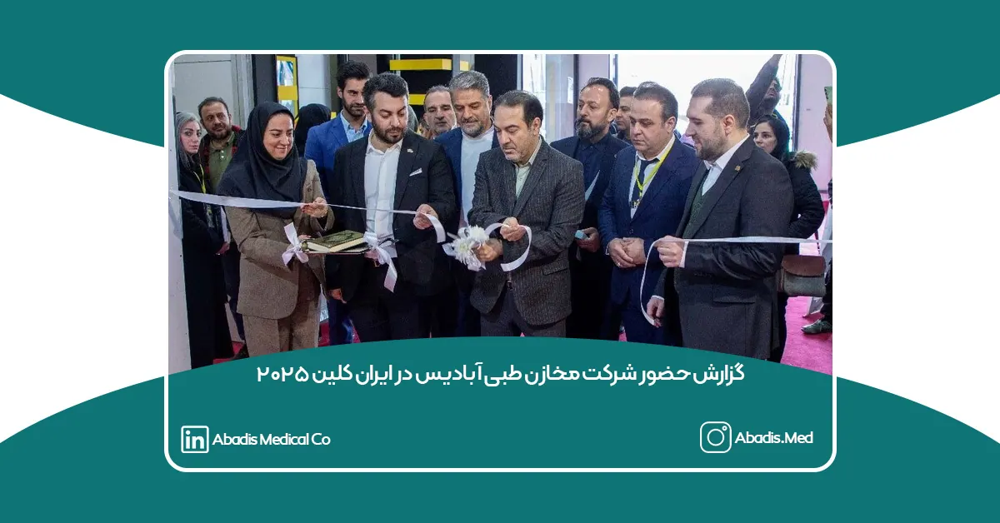
شرکت دانش بنیان مخازن طبی آبادیس، اولین و بزرگترین تولیدکننده کیسه ساکشن یکبار مصرف در ایران، در اولین کنگره جامع پیشگیری از عفونتهای بیمارستانی و ارتقای کیفیت خدمات بهداشتی، تجهیزات پزشکی و استریلیزاسیون و نمایشگاه تخصصی ایران کلین ۲۰۲۵ که در تاریخ ۲۶ تا ۲۸ دیماه ۱۴۰۳ در هتل المپیک تهران برگزار شد، حضور فعال و چشمگیری داشت.
این کنگره با حضور متخصصان، دانشگاهیان و فعالان حوزه سلامت، همزمان با برگزاری نمایشگاه بینالمللی ایران کلین، فرصت مناسبی برای شرکتها و متخصصان فراهم کرد تا دستاوردها و نوآوریهای خود را در حوزه کنترل عفونت، پیشگیری از عفونتهای بیمارستانی، بهبود کیفیت خدمات بهداشتی و استریلیزاسیون به نمایش بگذارند.
شعار این کنگره “کنترل عفونت، آیندهای بدون بحران“ بود؛ از این رو کنگره با هدف ارتقای سطح آگاهی و آموزش در زمینههای مختلف کنترل عفونت، پیشگیری از بیماریهای نوپدید و بازپدید، فناوریهای نوین در گندزدایی تجهیزات پزشکی، مدیریت بحرانهای زیستی و ایمنی کادر درمان برگزار شد. از جمله محورهای اصلی این کنگره میتوان به موارد زیر اشاره کرد:
- نظام مراقبت سندرومیک و رویکرد به بیماریهای نوپدید و بازپدید
- استراتژیهای مراقبت و ایزولاسیون بیماران پرخطر
- اصول و فناوریها در گندزدایی تجهیزات پزشکی و ضدعفونی محیط
- مقاومت میکروبی و استراتژیهای مدیریت بهینه مصرف آنتیبیوتیکها
- کاربرد هوش مصنوعی در پیشگیری و کنترل عفونت
بازدید از نمایشگاه مجازی ایران کلین
اگر موفق به بازدید حضوری از نمایشگاه ایران کلین نشدهاید، نمایشگاه مجازی ایران کلین به شما این امکان را میدهد تا از طریق اینترنت به تمام بخشها و غرفههای نمایشگاه دسترسی داشته باشید. برای بازدید آنلاین اینجا کلیک کنید.
به نقل از تیتر کوتاه، مراسم افتتاحیه کنگره در تاریخ ۲۶ دیماه با حضور مقامهای برجسته دولتی و متخصصان حوزه سلامت برگزار شد. از جمله سخنرانان افتتاحیه، سرکار خانم دکتر مینو محرز، رئیس کنگره و استاد برجسته بیماریهای عفونی و گرمسیری، بود که در سخنرانی خود بر اهمیت کنترل عفونتهای بیمارستانی و ضرورت پیشگیری از بیماریهای نوپدید و بازپدید تأکید کرد.
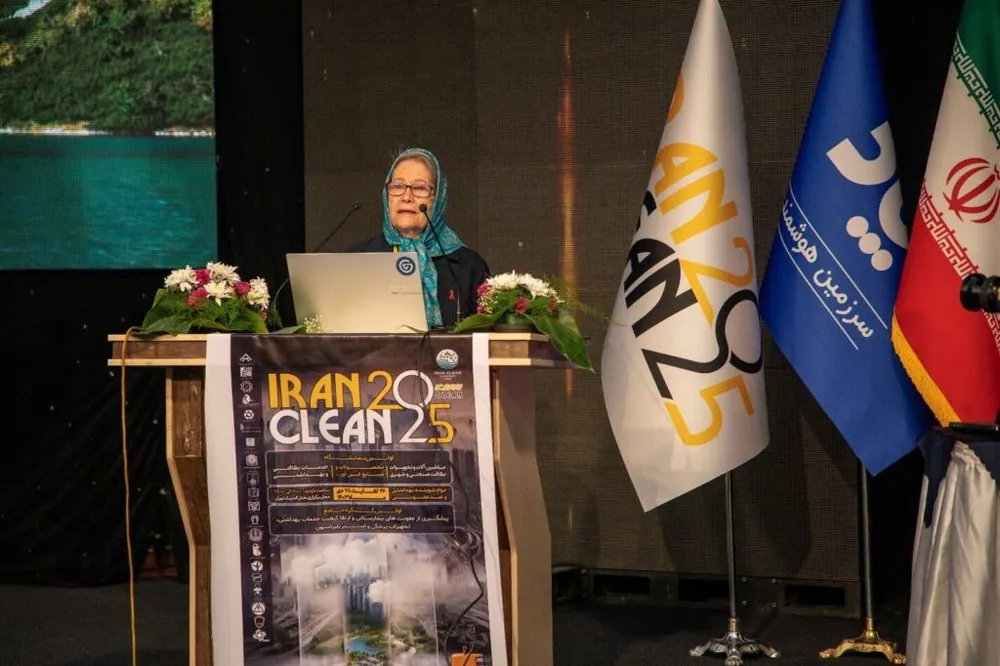
همچنین جناب آقای دکتر رئیسی، معاون وزیر بهداشت، ضمن اشاره به چالشهای مصرف بیرویه آنتیبیوتیکها، بر اهمیت ایجاد برنامههای پیشگیرانه جدید و استراتژیهای بهینهسازی مصرف داروها برای کاهش مقاومت میکروبی و عفونتهای بیمارستانی تأکید کرد. وی همچنین از برگزاری چنین کنگرههایی به عنوان گامی مؤثر در اصلاح روند پیشگیری از عفونتهای بیمارستانی و کاهش مقاومت میکروبی یاد کرد.
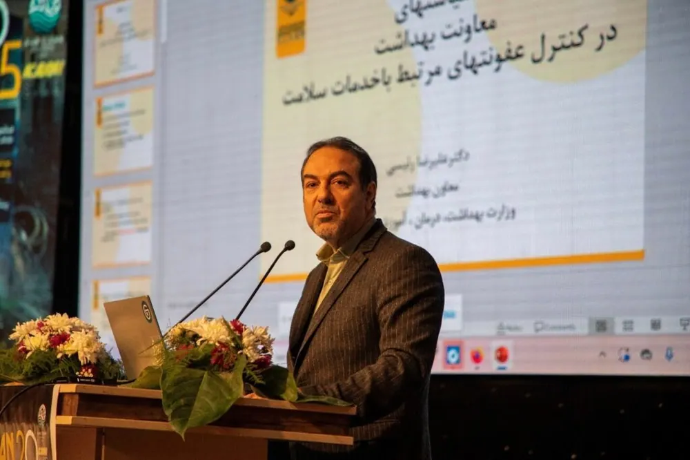
مصاحبه جناب آقای دکتر رئیسی با اکو ایران در خصوص کنترل عفونت و کیسه ساکشن یکبار مصرف:
جزئیات بیشتر گفتوگو جناب آقای دکتر رئیسی را میتوانید در این اخبار مشاهده نمایید.
دکتر شفیعی، دبیر اجرایی کنگره، هدف از برگزاری این رویداد را تبادل دانش و ارائه راهکارهای نوین برای پیشگیری از عفونتهای بیمارستانی و ارتقای کیفیت خدمات بهداشتی اعلام کرد.
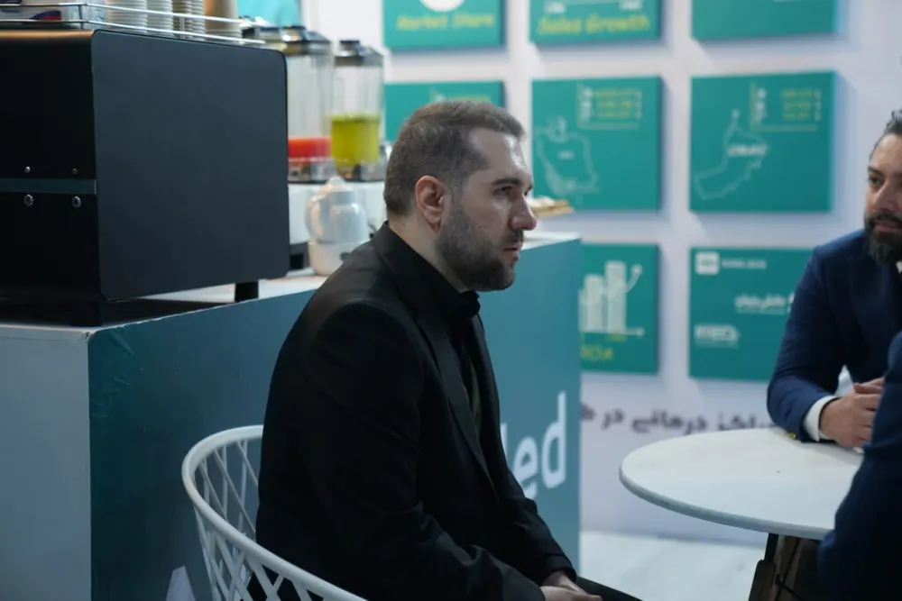
این مراسم با حضور سفرای کشورهای غنا، نیجریه و ساحل عاج نیز همراه بود و حضور نمایندگان این کشورها نشاندهنده اهمیت جهانی این موضوع بود.
جناب آقای مسعود برهمن، رئیس اتاق بازرگانی ایران و آفریقا، در حاشیه اولین نمایشگاه بینالمللی ایران کلین، که به ماشینآلات و تجهیزات پیشرفته نظافت صنعتی و شهری، مواد شوینده و ضدعفونی اختصاص دارد، اظهار داشت: برگزاری اینگونه نمایشگاهها فرصتی برای تولیدکنندگان و مصرفکنندگان است تا از ظرفیتها و نوآوریهای تازه در صنعت آگاه شوند. اما چالشهای اصلی صنعت به مشکلات ساختاری و مدیریتی در نهادهای حکومتی بازمیگردد. این نهادها باید به جای اتکا به سخنرانیها و همایشهای بینتیجه، اقدامات عملی برای رفع موانع صنعت انجام دهند.
به نقل از اکو ایران او همچنین به ظرفیتهای موجود در حوزه پزشکی و درمان اشاره کرد و گفت: ظرفیتهای داخلی ایران در این حوزه بسیار گسترده است و بخش توریسم درمانی کشور نیز در مسیر رشد و توسعه قرار دارد.
جناب آقای برهمن در ادامه از نهادهای دولتی خواست تا با سیاستهای موثر، شامل هدایت، حمایت و نظارت، از بخش خصوصی پشتیبانی کنند و از مداخله بیش از حد در امور اجرایی اجتناب ورزند.
وی با تأکید بر ظرفیتهای صادراتی کشور افزود: ایران توانایی صادرات قابلتوجهی دارد. در حال حاضر، در بازار ۱۵ کشور همسایه، حدود ۴ هزار میلیارد دلار تبادل تجاری و خدماتی صورت میگیرد، اما سهم ایران از این رقم کمتر از ۴۰ میلیارد دلار است. این در حالی است که با استفاده بهینه از ظرفیتهای داخلی، پتانسیل صادرات کشور میتواند به ۳۶۰ میلیارد دلار برسد که نیازمند برنامهریزی دقیق و عملی برای تحقق آن است.
بازتاب خبری شبکه تهران از اولین نمایشگاه ایران کلین:
کنگره ایران کلین، در یکی از بخشهای خبری شبکه تهران نیز مورد پوشش قرار گرفت. در این گزارش، به اهمیت کنگره در پیشگیری از عفونتهای بیمارستانی و ارتقای کیفیت خدمات درمانی و استفاده بیرویه آنتی بیوتیکها تأکید شد. شبکه تهران به حضور فعال شرکتها و متخصصان این حوزه اشاره کرد و اقدامات مؤثر و نوآورانه در زمینه تجهیزات پزشکی و کنترل عفونت را برجسته ساخت.
کنگره در دو روز متوالی با برگزاری پنلهای تخصصی و کارگاههای آموزشی، به بحث و بررسی جدیدترین استراتژیها، فناوریها و شیوههای پیشگیری از عفونتهای بیمارستانی پرداخت.
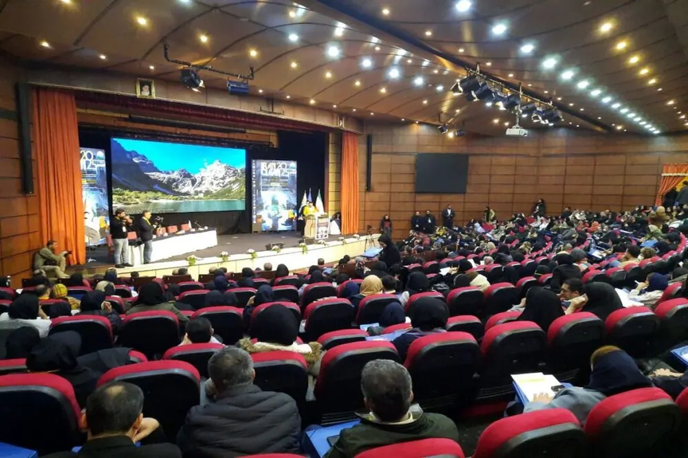
در روز اول چهارشنبه ۲۶ دی ماه، پنل های تازه های نظام مراقبت عفونت های بیمارستانی مطابق راهنمای جدید سازمان بهداشت جهانی، آخرین دستورالعمل ها و دستاوردها در استریلیزاسیون تجهیزات پزشکی و بیماری های نوپدید و بازپدید؛ اطلاعات به روز شده جهانی و منطقه ای برگزار شد.
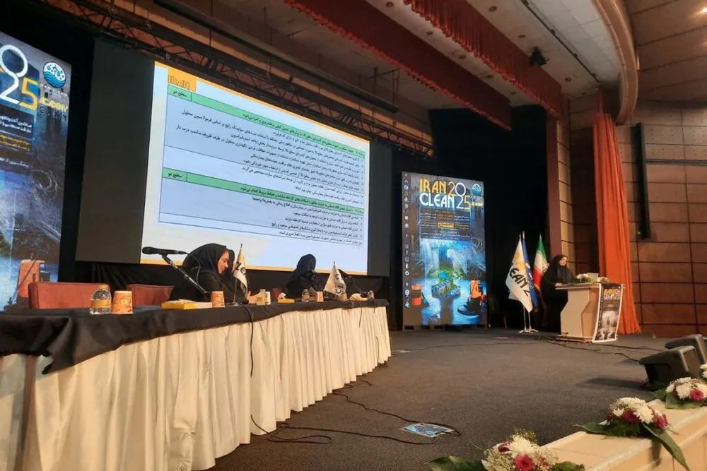
در پنل تازه های نظام مراقبت عفونت های بیمارستانی مطابق راهنمای جدید سازمان بهداشت جهانی تخصصی که با ریاست دکتر شیرین افهمی، دانشیار بیماریهای عفونی دانشگاه علوم پزشکی تهران برگزار شد، ابتدا ایشان به ارائه مقدمهای جامع در خصوص نظام مراقبت عفونتهای بیمارستانی و اپیدمیولوژی آن پرداختند.
سپس اساتید برجستهای همچون دکتر مهشید طالبی طاهر، دکتر نگین اسماعیلپور، دکتر فهیمه هداوند و دکتر پردیس مرادنژاد به بررسی اصول و روشهای نظام مراقبت عفونتهای بیمارستانی، ضرورت اجرای آن و چالشهای پیش رو پرداختند.
در بخش پایانی، دکتر بابک عشرتی، استاد اپیدمیولوژی، به تحلیل یک دهه نظام مراقبت عفونتهای بیمارستانی در ایران و ارائه آمار و ارقام مرتبط پرداخت. برگزاری این پنل نشاندهنده اهمیت روزافزون پیشگیری از عفونتهای بیمارستانی و تلاش متخصصان برای بهبود سطح مراقبتهای بهداشتی کشور است.
در پنل تخصصی “آخرین دستورالعملها و دستاوردها در استریلیزاسیون تجهیزات پزشکی” که با ریاست خانم اعظم چراغی، رئیس اداره اعتباربخشی استان اصفهان، برگزار شد، ایشان به بررسی نکات کلیدی استریلیزاسیون بر اساس استانداردهای اعتباربخشی پرداختند.
سپس دکتر اسماعیل محمدنژاد، دانشیار دانشگاه علوم پزشکی تهران، اصول پاکسازی و ضدعفونی تجهیزات در واحد استریلیزاسیون مرکزی را مطرح کردند. دکتر کیانا شیرانی، استادیار بیماریهای عفونی، نیز ساختار واحد استریلیزاسیون مرکزی را توضیح دادند.
در ادامه، سارا ابریشمی، کارشناس مسئول کنترل عفونت، به بررسی روشهای شستشو و پایش فرآیندهای آن پرداخت و خانم فروغ مولا، متخصص پرستاری، احتیاطات استاندارد در واحد استریلیزاسیون مرکزی را تشریح کردند. این پنل به ارائه آخرین دستاوردها و دستورالعملهای روز در زمینه استریلیزاسیون و کنترل عفونت پرداخت.
پنل “بیماریهای نوپدید و بازپدید؛ اطلاعات بهروز جهانی و منطقهای” با ریاست دکتر حمید عمادی کوچک و حضور اساتید برجستهای چون دکتر محمدحسن پوریای ولی، دکتر ملیحه حسیننژاد و دکتر احمد رئیسی برگزار شد. این نشست فرصتی برای تبادل نظر در خصوص آخرین یافتهها و چالشهای بیماریهای نوپدید و بازپدید بود.
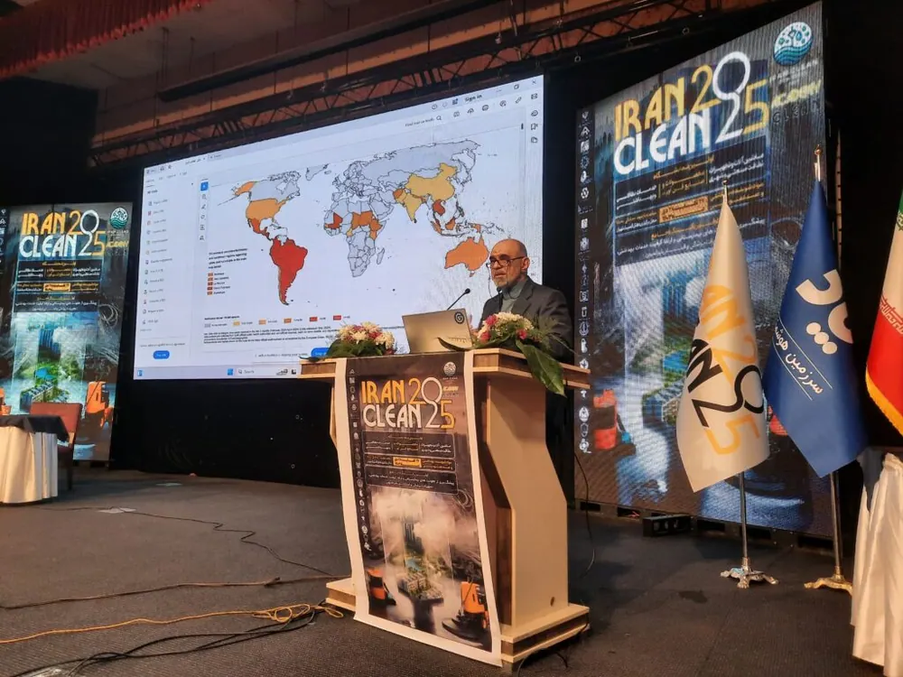
متخصصان به بررسی اطلاعات جهانی و منطقهای، راهکارهای پیشگیری، تشخیص و درمان این بیماریها پرداخته و بر اهمیت همکاری بینالمللی در مقابله با آنها تأکید کردند. برگزاری این پنل گامی مهم در ارتقای دانش و آگاهی متخصصان حوزه سلامت در مورد این بیماریها محسوب میشود.
در روز دوم این رویداد پنجشنبه ۲۷ دی ماه ۱۴۰۳، پنل کنترل عفونت در بلایا و کاهش خطر، پنل ایمنی بیمار، پرسنل، ایزولاسیون و مدیریت مواجهات شغلی، پنل پاندمی خاموش؛ استراتژی های پیشگیری از مقاومت میکروبی و پنل تخصصی پاکسازی و گندزدایی در کنترل عفونتها برگزار شد.
در دومین روز نمایشگاه ایرانکلین و کنگره پیشگیری از عفونتهای بیمارستانی، پنل تخصصی با عنوان «پاکسازی و گندزدایی تجهیزات و بهداشت محیط» برگزار شد. هدف این پنل بررسی چالشها و ارائه راهکارهای نوین برای ارتقاء بهداشت و کنترل عفونت در محیطهای بیمارستانی بود.
در این پنل، دکتر داوود یادگارینیا، استاد دانشگاه علوم پزشکی شهید بهشتی، به موضوع مقاومت میکروبی و مصرف منطقی آنتیبیوتیکها پرداخت و بر لزوم پیشگیری و کاهش مصرف بیرویه داروها تاکید کرد. دکتر جاوید، متخصص بیماریهای عفونی، روشهای مختلف گندزدایی، ضدعفونی و استریلیزاسیون تجهیزات و سطوح را بررسی کرد و اهمیت انتخاب روش مناسب را مطرح نمود. دکتر محبوبه علیزاده، متخصص بیماریهای عفونی، به اهمیت رعایت پروتکلهای دقیق پاکسازی در جلوگیری از شیوع عفونتهای بیمارستانی اشاره کرد. همچنین دکتر مینا آقایی، استادیار مهندسی بهداشت محیط، به معرفی تکنولوژیهای نوین گندزدایی و استفاده از محصولات سازگار با محیط زیست پرداخت. این پنل به عنوان گامی موثر در ارتقاء آگاهی و دانش متخصصان حوزه بهداشت و درمان در زمینه کنترل عفونت و بهداشت محیطهای بیمارستانی شناخته میشود.
پنل بعدی که در روز دوم کنگره برگزار شد پنل پاندمی خاموش؛ استراتژیهای پیشگیری از مقاومت میکروبی بود؛ هدف اصلی این پنل بررسی چالشهای مقاومت میکروبی به آنتیبیوتیکها و یافتن راهکارهای کاربردی برای کنترل آن بود.
در این پنل، دکتر محمدرضا صالحی، رئیس مرکز تحقیقات مقاومت میکروبی، به معرفی برنامههای استواردشیپ آنتیبیوتیکها و کتاب AWARE پرداخت و اهمیت آموزش مصرف منطقی آنتیبیوتیکها را مطرح کرد. دکتر مرجان فرزامی، دانشیار پاتولوژی، با استفاده از دادهها، وضعیت مقاومت میکروبی در ایران را بررسی کرد و عوامل موثر در افزایش این مقاومت را تشریح نمود. دکتر زهرا جهانگرد رفسنجانی، دانشیار بیماریهای عفونی، به تحلیل الگوی تجویز آنتیبیوتیکها در بیمارستانها و نقاط ضعف سیستم تجویز دارو در کشور پرداخت.
همچنین دکتر محمد زینلی، سیاستهای وزارت بهداشت در زمینه کنترل مقاومت میکروبی و تجویز آنتیبیوتیکها را مورد بررسی قرار داد. دکتر کیانوش کمالی، متخصص بیماریهای عفونی، بر تاثیر واکسیناسیون در کاهش مصرف آنتیبیوتیکها و پیشگیری از مقاومت میکروبی تاکید کرد.
این پنل در راستای افزایش آگاهی و ارتقاء دانش متخصصان حوزه بهداشت و درمان در کنترل مقاومت میکروبی برگزار شد و گامی موثر در مقابله با این چالش جهانی محسوب میشود.
هدف پنل تخصصی “ایمنی بیمار و پرسنل: ایزولاسیون و مدیریت مواجهات شغلی“، بررسی راهکارهای ارتقای ایمنی بیماران و پرسنل در بیمارستانها، به ویژه در زمینه ایزولاسیون بیماران مبتلا به بیماریهای عفونی و مدیریت مواجهات شغلی پرسنل بهداشتی بود.
در این پنل، دکتر مهناز منتظری، دانشیار بیماریهای عفونی دانشگاه علوم پزشکی تهران، به بررسی انواع ایزولاسیون بر اساس روش انتقال بیماری پرداخت و بر اهمیت انتخاب نوع مناسب ایزولاسیون برای هر بیمار تأکید کرد.
در ادامه، دکتر روناک میلادی، استادیار بیماریهای عفونی و فلوشیپ پیشگیری و کنترل عفونتهای بیمارستانی دانشگاه علوم پزشکی کرمانشاه، به ضرورت واکسیناسیون پرسنل بهداشتی در پیشگیری از بیماریهای عفونی و کاهش انتقال آنها به بیماران پرداخت و محدودیتهای کاری برای پرسنل واکسینهنشده را مطرح کرد.
سپس، دکتر آذر حدادی، استاد بیماریهای عفونی دانشگاه علوم پزشکی تهران، به اهمیت پروفیلاکسی پس از مواجهات شغلی پرداخت و بر لزوم انجام این اقدامات در موارد خاص برای پیشگیری از ابتلا به بیماریهای عفونی تأکید نمود.
این پنل تخصصی گامی مهم در جهت ارتقای دانش و آگاهی متخصصان بهداشت و درمان در زمینه پیشگیری و کنترل عفونتها و ایمنی در بیمارستانها بود.
پنل تخصصیای که با عنوان “کنترل عفونت در بلایا، کاهش خطر و ارتقای ایمنی” برگزار شد؛ هدف آن، بررسی چالشهای موجود در کنترل عفونت و یافتن راهکارهایی برای کاهش خطرات و افزایش ایمنی در شرایط بحرانی و بلایا بود.
سخنرانان مختلف این پنل به موضوعات مختلفی پرداخته و هر یک دیدگاه خود را درباره بهبود آمادگی و واکنش به بحرانها بیان کردند. دکتر غلامرضا معصومی، دانشیار دانشگاه علوم پزشکی ایران، بر لزوم آمادگی بیمارستانها و تدوین برنامههای مدیریت خطر تأکید کرد. او با ذکر مثالهایی از تجربیات عملی، به اهمیت رعایت استانداردهای مدیریت بحران در شرایط اضطراری اشاره کرد و گفت که این استانداردها میتوانند تا حد زیادی از آسیبها و خطرات ناشی از بلایا بکاهند.
دکتر علی نصیری، رئیس سازمان پیشگیری و مدیریت بحران شهر تهران، به چالشهای ایمنی در تجمعات انبوه پرداخت. او با توجه به افزایش جمعیت در شهرها و احتمال وقوع حوادث، بر اهمیت برنامهریزی برای مدیریت بحران در این شرایط تأکید کرد. به گفته او، برنامههای پیشگیرانه میتوانند در جلوگیری از وقوع فاجعه در این شرایط نقش بسزایی ایفا کنند.
دکتر شهرام طاهرزاده، متخصص مدیریت محیط زیست، نیز به مسأله افزایش ظرفیت مراکز درمانی در هنگام وقوع حوادث پرداخت. او راهکارهایی برای افزایش این ظرفیتها و حفظ کیفیت خدمات درمانی حتی در شرایط بحرانی ارائه داد و بر این نکته تأکید کرد که در مواقع بحران باید توان مراکز درمانی برای پذیرش بیماران افزایش یابد تا از بروز بحرانهای بیشتر جلوگیری شود.
دکتر آرزو دهقانی، متخصص سلامت در بلایا، به بررسی نقش تجهیزات فردی در کاهش خطرات پرداخت. او توضیح داد که استفاده صحیح از تجهیزات فردی میتواند از آسیبهای احتمالی به پرسنل بهداشتی در شرایط اضطراری جلوگیری کند و امنیت بیشتری را برای آنها به همراه داشته باشد.
در نهایت، دکتر شیوا یوسفیان، مدیرکل اداره امور حوادث و بلایا سازمان اورژانس کشور، به موضوع ایمنی مراکز درمانی در برابر حوادث پرداخت. او بر لزوم آموزش پرسنل و تجهیز مراکز درمانی به امکانات و تجهیزات مناسب تأکید کرد و گفت که این اقدامات میتواند ایمنی بیمارستانها را در برابر بحرانها افزایش دهد.
در مجموع، این پنل تخصصی گام مهمی در ارتقای سطح آمادگی بیمارستانها و مراکز درمانی در برابر بلایا و حوادث غیرمترقبه به شمار میآید. راهکارهای علمی و عملی که توسط متخصصان این حوزه مطرح شد، میتواند به بهبود عملکرد بیمارستانها در شرایط بحرانی کمک شایانی کند.
کنگره پیشگیری از عفونتهای بیمارستانی که در دو روز متوالی برگزار شد، فرصتی بینظیر برای تبادل اطلاعات و بررسی جدیدترین دستاوردها و استراتژیهای پیشگیری از عفونتها در مراکز درمانی بود. در این رویداد، پنلهای تخصصی و کارگاههای آموزشی متعددی برگزار شد.
از جمله مهمترین نکات این کنگره، میتوان به اهمیت پیشگیری از عفونتهای بیمارستانی و کنترل آنها از طریق رعایت پروتکلهای دقیق، آموزش و آگاهیبخشی به پرسنل بهداشتی، و استفاده از روشهای نوین گندزدایی و استریلیزاسیون اشاره کرد. همچنین، مسائل مهمی چون مدیریت خطر و آمادگی بیمارستانها در شرایط بحرانی، کاهش مصرف بیرویه آنتیبیوتیکها و مقابله با پاندمیهای جدید نیز در دستور کار این رویداد قرار گرفت.
در مجموع، برگزاری این کنگره تخصصی نه تنها به ارتقای سطح دانش و آگاهی متخصصان حوزه بهداشت و درمان کمک کرد، بلکه نشاندهنده عزم جدی برای مقابله با چالشهای جهانی حوزه سلامت و ارتقای کیفیت مراقبتهای بهداشتی در کشور بود. این نوع رویدادها میتواند نقشی حیاتی در بهبود عملکرد سیستمهای بهداشتی و درمانی و کاهش خطرات ناشی از عفونتهای بیمارستانی ایفا کند.
در کنار کنگره، نمایشگاه ایران کلین نیز فرصتی برای معرفی آخرین دستاوردها در زمینه تجهیزات پزشکی، مواد ضدعفونیکننده و فناوریهای نوین بود. در این نمایشگاه، شرکتها و فعالان این صنعت آخرین نوآوریها و محصولات خود را ارائه کردند.
شرکت دانش بنیان مخازن طبی آبادیس، به عنوان یکی از پیشگامان صنعت تجهیزات پزشکی و کنترل عفونت در ایران، در کنگره و نمایشگاه ایران کلین ۲۰۲۵ حضور فعال و چشمگیری داشت.
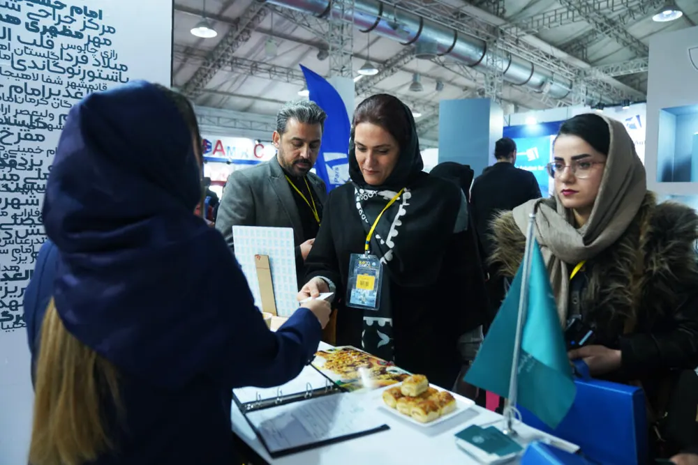
در مصاحبه ای که در روز دوشنبه ۱۲ آذر ماه ۱۴۰۳، مدیرعامل شرکت دانش بنیان مخازن طبی آبادیس، جناب آقای مهندس علیرضا حسنعلی، با تیتر کوتاه در خصوص حضور این مجموعه در نمایشگاه ایران کلین و زمینههای فعالیت این شرکت در حوزه کنترل عفونت و پیشگیری از خطرات بهداشتی انجام دادند؛ ایشان به ماموریت شرکت آبادیس در زمینه مدیریت هوشمند زبالههای بیمارستانی و جلوگیری از انتشار عفونتهای بیمارستانی، اشاره کردند. وی اظهار داشت: «شرکت مخازن طبی آبادیس به عنوان بزرگترین تولیدکننده کیسه ساکشن یکبار مصرف در ایران، به دنبال ایجاد تغییرات اساسی در صنعت تجهیزات پزشکی و کنترل عفونت در مراکز درمانی است. این هدف را با بهرهگیری از سیستمهای پیشرفته هوش تجاری (BI) در فرآیند تصمیمگیریهای خود دنبال میکنیم.»
وی همچنین به اهمیت برگزاری نمایشگاههای تخصصی مانند ایران کلین اشاره کرد و پیشنهاد داد: «برگزارکنندگان این نمایشگاهها باید از سیستمهای پیشرفته هوش تجاری در ارزیابی فرصتهای بازار و توسعه صنعت سلامت کشور استفاده کنند. این امر میتواند به شفافسازی و ارتقای کیفیت خدمات بهداشتی و درمانی در ایران کمک کند.»
با توجه به دستاوردهای این شرکت در تجهیز بیش از 500 مرکز درمانی در ۲۸ استان کشور و برنامههای آتی برای گسترش صادرات به کشورهای مختلف، حضور آبادیس در نمایشگاه ایران کلین نمایانگر تلاش این مجموعه برای انتقال نوآوریهای خود به عرصه بینالمللی و ارتقای سطح بهداشت در مراکز درمانی است.
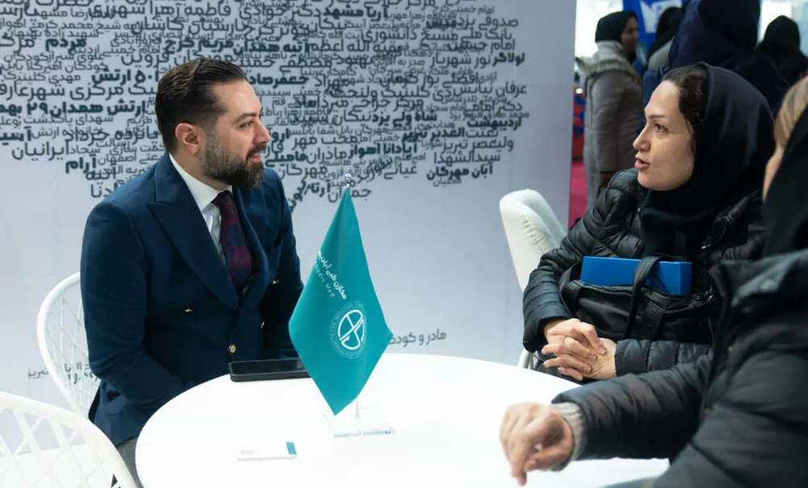
آبادیس با معرفی محصولات و دستاوردهای خود در زمینه پیشگیری از عفونتهای بیمارستانی و ارتقای کیفیت خدمات بهداشتی، توجه بسیاری از متخصصان و شرکتکنندگان را جلب کرد. یکی از جاذبههای غرفه آبادیس، طراحی منحصر به فرد درختی بود که در آن نام تمامی مراکز درمانی و مشتریان آبادیس ذکر شده بود. این درخت، نمادی از مسئولیت اجتماعی، اثرگذاری آبادیس بر محیط زیست و حمایتهای متقابل بین آبادیس و مراکز درمانی در سراسر کشور بود که با استقبال گرم حاضرین روبرو شد.
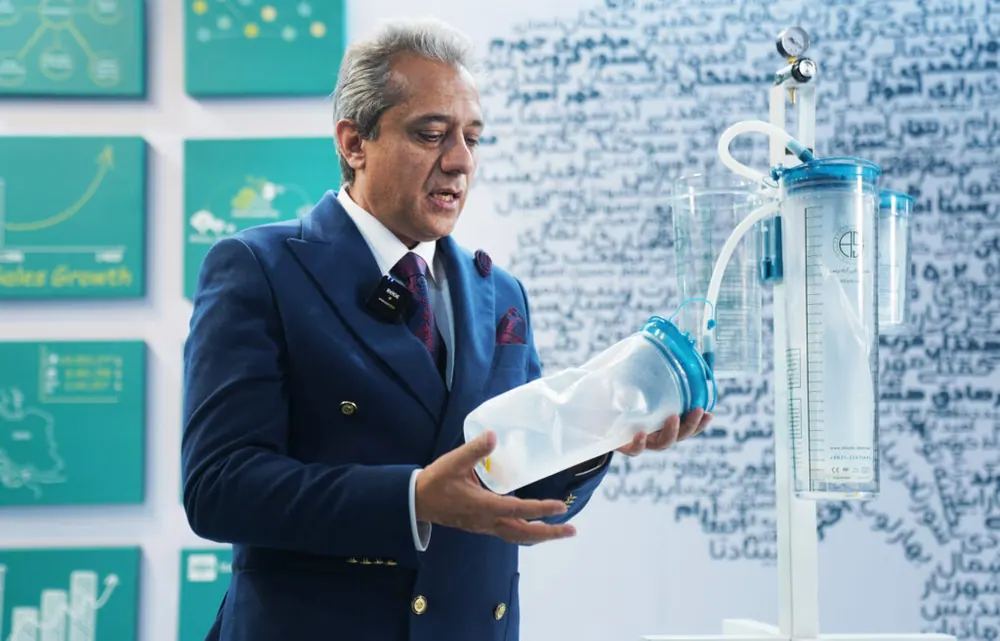
شرکت دانش بنیان مخازن طبی آبادیس، اولین و بزرگترین تولیدکننده کیسههای ساکشن یکبار مصرف در ایران، در نمایشگاه بینالمللی ایران کلین 2025 حضور درخشانی داشت و توانست توجه شخصیتهای برجسته و فعالان حوزه سلامت را به خود جلب کند.
در این رویداد مهم، سرکار خانم دکتر مینو محرز، از برجستهترین متخصصان پزشکی کشور، جناب آقای دکتر رییسی، معاون بهداشت وزیر بهداشت، و همچنین سفرای کشورهای آفریقایی از غرفه آبادیس بازدید کردند. این بازدید فرصت ارزشمندی برای معرفی دستاوردهای شرکت و تقویت تعاملات تجاری در سطح بینالمللی فراهم آورد.
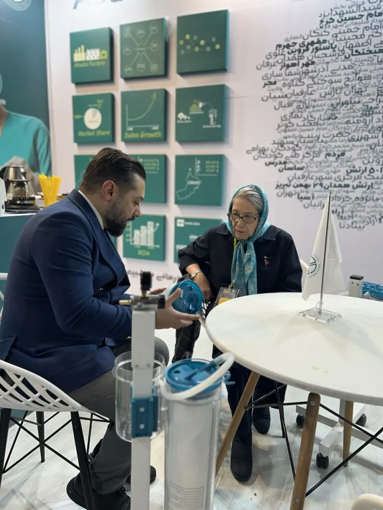
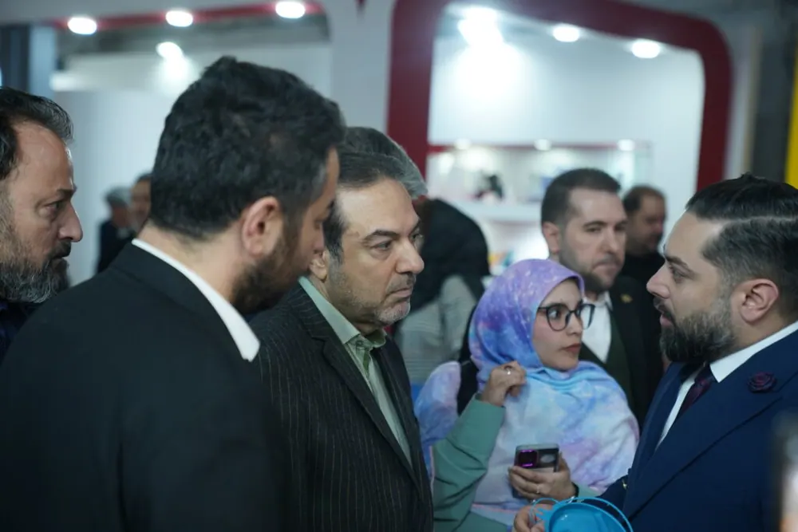
در جریان این بازدیدها، جناب آقای نوید حسنعلی معاونت بازرگانی و فروش آبادیس ویژگیها و مزایای کیسههای ساکشن یکبار مصرف آبادیس را به تفصیل معرفی کرد. این محصولات، که با بهرهگیری از فناوریهای پیشرفته و دانش بومی تولید شدهاند، نقش مهمی در کنترل عفونتهای بیمارستانی و کاهش هزینههای درمان ایفا میکنند.
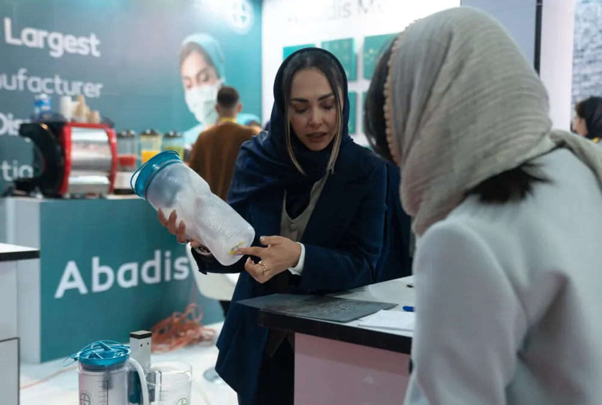
محصولات آبادیس به دلیل کیفیت بالا، سازگاری با استانداردهای بینالمللی و توجه به نیازهای مراکز درمانی، مورد استقبال ویژه شخصیتهای برجسته و سفرای آفریقایی قرار گرفت. این استقبال نشاندهنده جایگاه ویژه آبادیس در صنعت تجهیزات پزشکی و تمایل بازارهای خارجی به محصولات دانشبنیان ایرانی است.
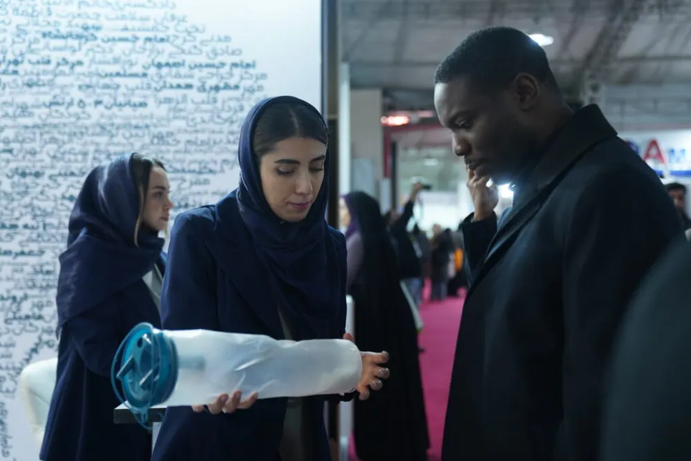
در این دیدارها، جناب آقای نوید حسنعلی، رئیس هیئت مدیره آبادیس، علاوه بر ارائه توضیحات در مورد کیسههای ساکشن، به تشریح برنامههای مسئولیت اجتماعی شرکت آبادیس پرداخت. وی با اشاره به پویش نجات زاگرس، از جمله کاشت درخت در منطقه زاگرس و تلاشهای گسترده برای حفاظت از منابع طبیعی، بر تعهد آبادیس به اثرگذاری بر محیط زیست تأکید کرد. این اقدامات، بهعنوان بخشی از رویکرد پایدار شرکت، به شدت مورد توجه بازدیدکنندگان قرار گرفت.
مصاحبه جناب آقای نوید حسنعلی با اکو ایران در خصوص چالشهای مالی صنعت تجهیزات پزشکی:
برای مطالعه مصاحبه رئیس هیئت مدیره آبادیس با اکو ایران کلیک کنید.
کیسههای ساکشن یکبار مصرف آبادیس، با طراحی منحصربهفرد و کیفیت بیرقیب، انتخاب اول بیشتر مراکز درمانی و متخصصان بهداشت هستند. این محصولات، علاوه بر نقش کلیدی در ارتقای سطح بهداشت و کاهش عفونتهای بیمارستانی، با کاهش هزینههای عملیاتی، به بهبود عملکرد مراکز درمانی کمک میکنند.
شرکت دانش بنیان مخازن طبی آبادیس در طول هفت سال گذشته، در راستای مسئولیت اجتماعی و حفظ محیط زیست، دستاوردهای بسیار قابل توجهی بهدست آورده است. یکی از بزرگترین دستاوردهای آبادیس صرفهجویی در مصرف منابع حیاتی همچون آب است.
آبادیس تنوانستهاست تا آذر ماه سال ۱۴۰۳، در ایران بیش از ۳۴ میلیون و ۵۵۳ هزار لیتر آب را صرفهجویی کند. این حجم آب معادل مصرف سالانه بسیاری از شهرهای کوچک ایران است. در عراق نیز بیش از ۵ میلیون لیتر آب به همین روش صرفهجویی شده و در عمان هم نزدیک به ۲۵۴ هزار لیتر آب از مصرف بیرویه جلوگیری شده است. این نتایج نشان میدهند که شرکت آبادیس نه تنها در ایران بلکه در کشورهای همسایه نیز توانسته تاثیرات مثبتی داشته باشد.
علاوه بر صرفهجویی در آب، یکی دیگر از دستاوردهای برجسته آبادیس جلوگیری از ورود پسابهای عفونی بیمارستانها به محیط زیست بوده است. با استفاده از محصولات و تکنولوژیهای نوآورانهای که تولید کردهاست، آبادیس توانستهاست از ورود ۸ میلیون و ۴۸۱ هزار لیتر پساب عفونی به طبیعت در ایران جلوگیری کند. در عراق و عمان نیز به ترتیب، بیش از ۱ میلیون و ۲۷۷ هزار لیتر و ۶۲ هزار لیتر پسابهای عفونی از محیط زیست پاک شده است.
همچنین در زمینه مصرف مواد ضدعفونیکننده، آبادیس قادر بوده است در مجموع ۳ میلیون و ۱۴۱ هزار لیتر مواد ضدعفونیکننده در ایران، ۴۷۳ هزار لیتر در عراق و ۲۳ هزار لیتر در عمان صرفهجویی کند.
این موضوع بهویژه در شرایط کنونی که مصرف بیرویه این مواد میتواند به مشکلات زیستمحیطی و سلامت عمومی دامن بزند، اهمیت زیادی دارد.
تمام این دستاوردها نشان میدهند که شرکت مخازن طبی آبادیس، به عنوان یک شرکت دانشبنیان، نه تنها در تولید محصولات با کیفیت برای پیشگیری از عفونتهای بیمارستانی موفق بوده، بلکه با تمرکز بر مسئولیتهای اجتماعی خود، گامهای بزرگی در راستای حفاظت از محیط زیست و کاهش اثرات منفی انسان بر طبیعت برداشته است.
در کنار اینها، آبادیس همچنین به حفظ طبیعت و اکوسیستمهای ارزشمند ایران و کشورهای همسایه توجه ویژهای داشتهاست. به همین منظور، برای حمایت از حفاظت از منطقه زاگرس، پروژه کاشت ۴۰۰۰ درخت بلوط را در دستور کار دارد که اولین گروه از این درختان در ارتفاعات زاگرس کاشته شده است. این درختان به نام مراکز درمانی که از خانواده بزرگ آبادیس هستند، کاشته شدهاند و با هر درخت، یاد و خاطره این همکاری در طبیعت باقی خواهد ماند.
آبادیس بهطور کلی به فلسفه خود در قبال طبیعت و جامعه پایبند است و این پروژهها تنها نمونهای از تعهد آبادیس به محیط زیست و سلامت انسانها هستند. این دستاوردها نه تنها در راستای اهداف اقتصادی بوده، بلکه بر توسعه پایدار و مسئولیتپذیری اجتماعی تمرکز دارند.
حضور موفق آبادیس در نمایشگاه ایران کلین 2025 نشاندهنده تعهد این شرکت به نوآوری، کیفیت و تعاملات بینالمللی است. استقبال گسترده از محصولات این شرکت، بار دیگر جایگاه پیشرو آبادیس در صنعت تجهیزات پزشکی را تثبیت کرد و افقی روشن برای گسترش صادرات و همکاریهای جهانی ترسیم نمود.
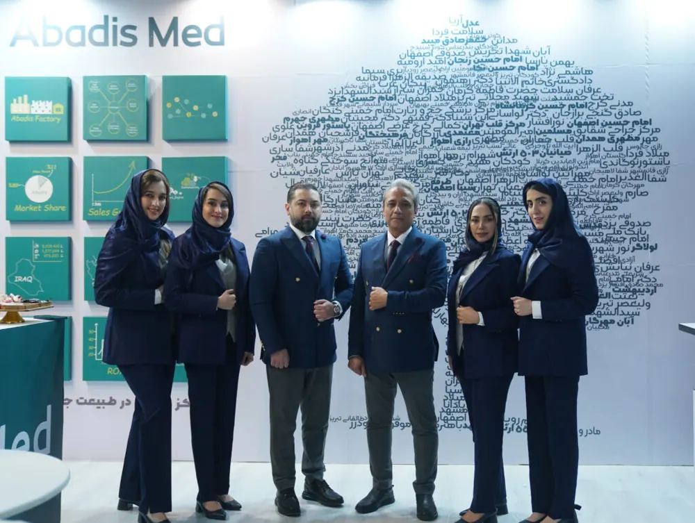
در روز جمعه ۲۸ دیماه ۱۴۰۳، مراسم اختتامیه نمایشگاه ایران کلین با حضور تمامی شرکتهای حاضر برگزار شد. در این مراسم، تیم اجرایی ایران کلین با اهدای تندیس ویژه، از مشارکت ارزشمند شرکتکنندگان تقدیر کرد. این تندیس بهعنوان نشانی از همکاری و نقش مهم شرکتها در ارتقای استانداردهای بهداشت و کنترل عفونت در حوزه سلامت اعطا شد. این رویداد فرصتی برای تعامل بیشتر بین فعالان حوزه پزشکی و بهداشتی فراهم کرد و فضای مثبتی برای آینده همکاریها ایجاد نمود.
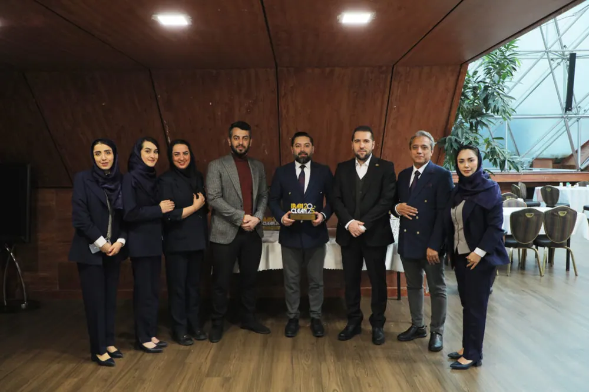